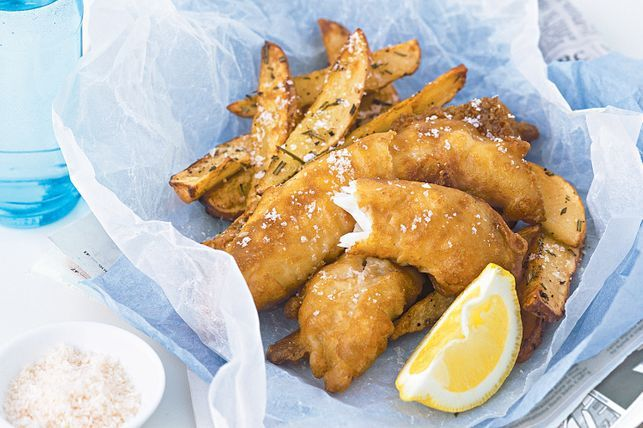

Home
Fish and Chips

Source: image from taste.com.au.
Description
Crisp-battered flathead fillets and rosemary potato wedges will win over the entire family - perfect for a Good Friday meal.
Source: taste.com.au
Ingredients
- 4 medium (about 650g) desiree potatoes
- 2 tbsp olive oil
- 2 tbsp chopped rosemary
- 1 2/3 cups (250g) self-raising flour
- 1 cup (250ml) cold beer
- 1/2 cup (125ml) cold water (approximately)
- Vegetable or canola oil, to deep-fry
- 8 small (about 700g) flathead fillets (or other boneless white fish)
- Lemon wedges, to serve
- Green salad leaves, to serve
Source: taste.com.au
Steps
- Preheat oven to 250°C. Cut unpeeled potatoes into thin wedges (about 10-15mm thick). Place potato in a medium bowl with olive oil and rosemary. Season with salt and freshly ground black pepper and gently toss to combine. Arrange potato on two greased oven trays. Bake, swapping tray positions halfway through cooking, for 30 minutes or until brown and crisp.
- Meanwhile, sift flour into a medium bowl. Use a whisk to gradually whisk in beer and enough water to form a batter the consistency of thickened cream. Whisk until smooth (do not overbeat). Set aside for 20 minutes to rest.
- Place enough oil in a large, deep saucepan or wok to create a depth of 7cm. Place over medium heat until 180°C (to test when oil is ready, a cube of bread will turn golden brown in 20 seconds). Dip one fish fillet in batter and carefully lower into hot oil. You may only be able to cook 2 to 3 at a time. Cook, turning occasionally, for 4-5 minutes or until golden brown and cooked through. Use a slotted spoon to transfer to a plate lined with paper towel. Repeat in three more batches with remaining batter and fish, reheating oil between batches.
- Place fish and chips on serving plates. Serve immediately with lemon wedges and salad leaves, if desired.
Source: taste.com.au
Top